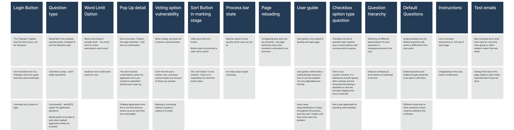
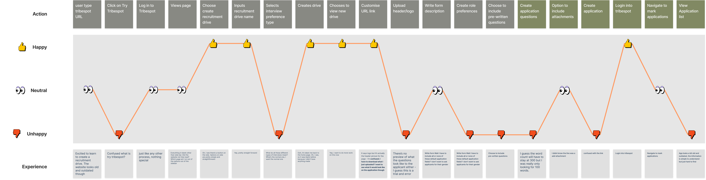

Tribespot is a web-based software that streamline the recruitment process such as creating and marking applications, scheduling interviews and emailing outcomes.
Product Design
Tribespot
01 At a glance
Duration
8 Weeks
Role
Design Process

Tribespot is a web-based software that streamline the recruitment process such as creating and marking applications, scheduling interviews and emailing outcomes.
8 Weeks
Every society at UNSW has at least registered on Tribespot and have made a recruitment drive. However, after making the drive, not all societies have stayed on, with some societies going back to use google forms. Potential pain-points that users may experience might involve
To understand the users problem, I conducted 4 user interviews and user testings, two of which were Tribespot current users and two were new users. Below is the current Tribespot that we test users to create an application form. Based on the team's research, current Tribespot received and overall user satisfaction of 2.63/5
We synthesise the painpoint under common themes by utilising Affinity Diagram. Based on our finding, we conducted "How Might We" statements and brainstorm high-level changes we could implement.
To better visualise and understand the users overall emotions I created a user journey map outlining the actions, thoughts, experiences and opportunities which I have color highlighted the section I was responsible for.
The user journey and the affinity diagram have allowed the to pinpoint major problems with Tribespot: visual hierarchy, counterintuitive design practice and outdated aesthetic. Before delving into wireframe, I created a user persona in order for my team to keep Tribespot's end users in mind when ideating.
While we wireframe Tribespot, I took inspiration from different form applications such as Google Form, Microsoft Form, and Typeform to identify common behaviors in form creation and create a Lo-Fi prototype which my team and I used for further user testing before implemeting on Hi-Fi prototype. I was solely responsible for the "Create Application Form" page. Some key takeaway from the user testing were:
The design was restricted since we had to to abide by the MaterializedCSS's design systems for ease of implementation. After showcasing the mid-fidelity prototype, we were also told that the side bar is unchangeable in which I took the responsibility to make the required changes.
After conducting the final round of usability testing, we found that our design has a customer satisfaction of 4.75/5 from 2.63/5 previously. We showcase the product presentation live on Zoom to our client, in which the client was very satified with the project and aim to support the client throughout the implementation phase.
This project has solidified my passion for product design. I geniunely enjoy the moments where I put myself in the shoes of the end users and understand their painpoints. Below are some of the key takeaway from this project.